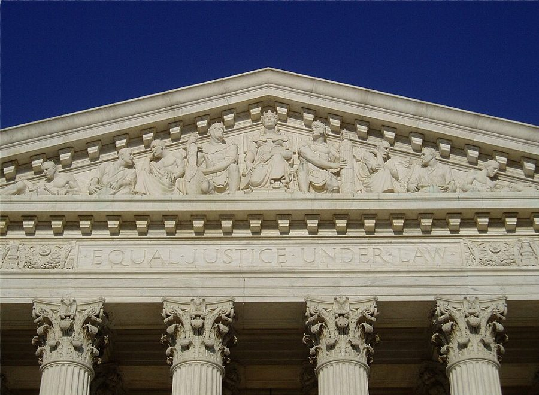
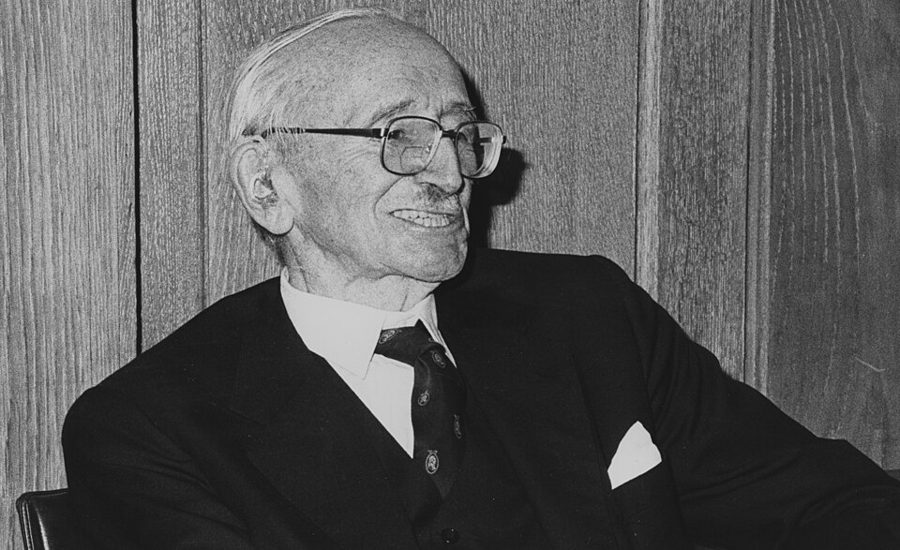

这一页在做什么
六十一二岁，在胡佛研究所。80 年代最后三年没有信，这一页从 1991 年 10 月接上。十八封，全是他写出去的：朋友 Clarence Thomas 的提名听证；导师 Stigler 去世；1992 年夏天一串谈最高法院的信；给陌生读者的回信；给 Mrs. G 的两封。
读的时候抓一个问题：他反对一个判决，反对的是判出来的结果，还是谁有权来定。
1992 1993
Thomas 听证
Stigler 去世
Casey 案判决
晚说话的专栏
朋友和家人 法律界 读者 学界同行
本站示意图。一个圆点是一封信，按信上的日期画，同一天的两封挨着画。1992 年 6 月底到 7 月底挤着七封，都和最高法院那个判决有关，或是同一个月里写的。1993 年下半年和 1994 年没有信，下一页从 1995 年开始。
第一封信之前有十一段串场文字，讲两件事：90 年代初在 Palo Alto 街头和 Audrey 的两次偶遇；Thomas 被提名后，他先是一个记者都不见，后来又谁都见。Audrey 这条线从 1960 年拉到这里，收了尾。
收信人和提到的人
这一页的信都是他写过去的，没有别人写来的信。收信人分四类：老朋友和家人、法律界的熟人、学界同行、素不相识的读者。读者的名字书里只给了姓，本站照抄。
Clarence Clarence Thomas · 1991 年 10 月起任最高法院大法官 80 年代就是朋友。这一页前半都在讲他的提名听证，但写给他本人的只有一封，谈的是别的案子。称呼后面用冒号。
Walter Walter Williams · 经济学家，70 年代起的老友 听证还没结束时写的。先报两件喜事，再谈 Thomas。对 Anita Hill 的动机说得很重，是只对老朋友说的话。
Anita Hill 只被提到 · 法学教授 曾是 Thomas 的下属。她在听证上指称 Thomas 当年对她有性骚扰的言语，Thomas 全盘否认。这一页只有他这一边的说法。
John 儿子 只有一句话的信，转述 Thomas 事后的一个玩笑。1993 年大学毕业，学的是统计和计算机。那篇讲他小时候晚说话的专栏，引出了后面几年的事。
Stephen George Stigler 的儿子 导师去世后的吊唁信。信里讲的是自己怎么成了 Stigler 的学生。信的收尾是一句祝祷，全书少见。
Mrs. G Marie Gadsden · 霍华德的英文老师 认识快半个世纪了。两封：1992 年初回她的来信，讲自己在写回忆；1993 年 6 月吊唁她的丈夫 Mr. Gadsden。现在轮到他给她改稿子。
Larry Laurence H. Silberman · 联邦上诉法院法官 书里说两人认识。Silberman 在一次演讲里说法官会被媒体的评论左右，他写信去接这个话头。
Lino Lino Graglia · 得克萨斯大学法学院教授 寄来自己在 Stanford Law Review 上的文章。这是这一页最长的一封信，从堕胎案谈到校车，再谈到宪法的字句该怎么读。
David David Riesman · 哈佛的社会学家 多年的通信对象。这封信谈一件事：把自己的感受安到别人头上。
Charles、Shelby Charles Murray · Shelby Steele Murray 是在机场碰到的，当时在写一本讲智力测验的书；信是给他荐一位学者。给 Steele 的信是转一段别人信里的话，和 Steele 自己有关。
几位读者 Mrs. Mueller · Mr. Fischer · Ms. Smith · Mr. and Mrs. Jurvis · Mr. ***** 看了他的专栏或电视节目来信的人。回信都用冒号，口气客气，立场一步不让。Ms. Smith 是他在电视上看到的一位讨论者。
Joe，和一位星号 书里只有名 · 名字被隐去的同事 给 Joe 的信只有一段，讲和 Rush Limbaugh 吃饭。星号那位是「同事兼朋友」，儿子晚说话，又是收养的，来信问他的看法。
这一页的 Mary 是妻子。 串场文字里的 my wife Mary, an attorney 是 70 年代末出现的那位 Mary，不是姐姐 Mary Frances。给星号同事的信里说的 my sister 才是姐姐，没写名字。Audrey 是化名，这一页不是收信人，只在开头的串场里出现。
两个 Thomas。 Audrey 的朋友问的 this Thomas Sowell 是作者；后面满篇的 Clarence、Clarence Thomas 是另一个人。Audrey 那句回答的意思，见词条。
信件地图
一条是一封信。斜体字是那封信正文开头的几个词，照这一版屏幕上的字抄的，在 Kindle 里搜它就能跳过去。编号是黄底的，是别人写来的信；这一页没有。「留意」只给方向，答案在信里。
Just today, I finally sent off 1991 年 10 月 12 日 · 写给 Walter 留意：写信那天听证还没完。他给 Hill 的动机列了几条，哪些有依据，哪些是猜。I heard from Clarence Thomas recently 1991 年 11 月 5 日 · 写给 John 留意：全信一句话。引号里那个没说完的词是什么。Please let me add my words 1991 年 12 月 3 日 · 写给 Stephen 留意：他夸老师的哪一样品质，是用自己当年的表现来衬的。It was such a nice warm 1992 年 1 月 20 日 · 写给 Mrs. G 留意：他说自己「弱势」时加了引号。真正要紧的东西，他认为是什么。I have just finished forcing myself 1992 年 7 月 7 日 · 写给 Clarence 留意：收信人自己就是这个案子的法官之一。信里几处引号是在拿谁的话开玩笑。What you said very much needed 1992 年 6 月 23 日 · 写给 Larry 留意：日期比上一封早。他拿哪两种人和法官比；第二段的论点和媒体无关。I would never have believed that 1992 年 7 月 9 日 · 写给 Mrs. Mueller 留意：只印了两句。睡不着的是谁，为什么。Thank you for your kind comments 1992 年 7 月 27 日 · 写给 Mr. Fischer 留意：读者以为他反对的是什么；他说自己反对的是什么。Thank you very much for sending 1992 年 7 月 28 日 · 写给 Lino 留意：上一封的那位读者在这里又出现了一次。谈校车那段，他拿自己的童年当证据。Your recently televised discussion of women 1992 年 7 月 27 日 · 写给 Ms. Smith 留意：他说有个理由现在没人敢说出口。那个理由是替谁着想。Thank you for your kind remarks 1992 年 9 月 12 日 · 写给 Mr. and Mrs. Jurvis 留意：他用哪三个人给读者打气；最后一段解释自己为什么不从政。As I look back over my 1992 年 10 月 30 日 · 写给 David 留意：他质疑的是判决书里的哪一条理由，不是判决的结论。第一段最后一句是防误读的。No one seems to have noticed 1992 年 11 月 24 日 · 写给 Mr. ***** 留意：两段各一个对比，都在算钱。第二段的旅馆套房，回忆录里也有。I wish we had had more 1993 年 1 月 25 日 · 写给 Charles 留意：他推荐的那位学者，政治立场和他相反。他看重的是什么。Thought you might be interested in 1993 年 2 月 19 日 · 写给 Shelby 留意：下面三段是别人信里的话，不是他的。谁提议，谁说不行。Had dinner with Rush Limbaugh the 1993 年 4 月 13 日 · 写给 Joe 留意：别人对同一件事前后说了两句话，放在一起看。As regards the question of adopted 1993 年 6 月 22 日 · 写给一位隐去名字的同事 留意：他没有给建议，只讲了自己的经历。专家一词加了引号。Your letter arrived while I was 1993 年 6 月 25 日 · 写给 Mrs. G 留意：和 1991 年那封吊唁信有一句几乎一样的话。信后的串场说的是师生换了位置。
背景：作者默认你知道的事
1991 年 10 月的听证
Clarence Thomas（右）在白宫椭圆办公室和里根合影，摄于里根任内。那时 Thomas 是平等就业机会委员会的主席。白宫摄影办公室，公有领域，维基共享资源 平等就业机会委员会（Equal Employment Opportunity Commission，信里写 E.E.O.C.）是查办就业歧视的联邦机构，Thomas 1982 年起当了八年主席。1991 年 7 月布什提名他进最高法院。参议院司法委员会的听证本已结束，10 月初 Anita Hill 的指控见报，听证重开，10 月 11 日到 13 日电视直播。15 日参议院以 52 票对 48 票通过。给 Walter 的信写在 12 日。
「半影」是哪来的
1965 年的 Griswold v. Connecticut 一案，最高法院废掉了康涅狄格州禁止使用避孕用品的法律。宪法里没有「隐私权」三个字，执笔的大法官 William O. Douglas 说，权利法案的各项保障有「半影」（penumbra），是从这些保障里「发散」（emanation）出来的，隐私权就在半影里。
批评的人把这两个词当成法官凭空造权利的标本。他送给 Thomas 的那块牌子，开的就是这个玩笑。
Planned Parenthood v. Casey，1992 年 6 月 29 日

最高法院大楼正门上方刻的 Equal Justice Under Law。给 Clarence 的信里，他提议把这一行换掉。Matt H. Wade，CC BY-SA 3.0，维基共享资源 1973 年的 Roe v. Wade 认定堕胎受宪法保护。到 1992 年，很多人以为 Roe 要被推翻。Casey 案的结果是保住了 Roe 的核心，换了一条标准：州的限制不得给妇女造成「不当负担」（undue burden）。九位大法官写了五份意见，很长。Scalia 写了反对意见，Thomas 也在反对的一边。
读者以为他在答
哪一种堕胎政策更好？
他说：这该是议会去争的事
他说自己在答
这件事该由谁来定？
他说：法官借解释宪法越了权
Griswold 1965，避孕
Roe 1973，堕胎
Casey 1992，堕胎
信里对这三个判决是同一条反对理由
本站示意图，画的是他在给 Fischer 和 Lino 的信里对自己立场的说法。支持这几个判决的人不这么看：他们认为宪法保护的自由本来就不限于明文列出的那几项，法官认定它，是在尽解释宪法的本分。
Brown 案和校车
1954 年的 Brown v. Board of Education 判公立学校的种族隔离违宪。判决书的理由之一是心理上的：把黑人孩子隔开，会让他们生出低人一等的感觉，妨碍学习。70 年代起，法院下令用校车把学生跨区接送，好让各校的种族比例均衡，这就是 busing，争了二十年。
给 Lino 和给 David 的两封信，质疑的是那条心理学理由和校车的实效。他在信里自己说了：这不是在替隔离辩护。
Stigler 和那期纪念专号
Milton Friedman，1976 年。Stigler 多年的同事和朋友，劝他把那篇文章发表出来的人。UPI，公有领域，维基共享资源
George Stigler，芝加哥大学教授，1982 年诺贝尔经济学奖得主，1991 年 12 月 1 日去世，吊唁信写在两天后。信里说的那篇把他引上这条路的论文，登在 1952 年 6 月的 Journal of Political Economy （芝加哥大学办的经济学期刊，行内叫 JPE）。
他写老师的那篇回忆有褒有贬，题目叫 A Student’s Eye View of George Stigler，后来登在这份期刊 1993 年 10 月的纪念专号上。
读到一篇论文 JPE，1952 年 6 月号
1958 年去哥大 到了才知道人刚走
第二年跟到芝加哥 成了他的学生
通信争 Say’s Law 1962 年前后
1991 年 12 月 Stigler 去世，吊唁信
1993 年 10 月 回忆文章登上纪念专号
本站示意图。上面一行在 Odyssey 第 5 章讲过；1962 年那封争论的信在这本书的第一页 。吊唁信里说他翻旧信时找到一封 Stigler 三十年前写来的信，谈的就是那场争论。
信里顺口提到的几个名字

Friedrich Hayek，1981 年 1 月在伦敦政治经济学院。作者不详，无已知版权限制，维基共享资源 Hayek 1944 年出版 The Road to Serfdom ，1992 年 3 月去世，给读者夫妇的信写在半年后。Sidney Hook 是从左派转成反共的哲学家，晚年也在胡佛。Charles Murray 那本书是 1994 年和 Richard Herrnstein 合著的 The Bell Curve ，因为谈智商的族群差异引起很大争议。
James Flynn 发现各国的智商测验平均分一代比一代高，后来叫 Flynn effect。Shelby Steele 是英文教授，1990 年出过一本谈种族的文集。Rush Limbaugh 是 1988 年起在全国联播的保守派电台主持人。
Odyssey 里讲过这一段
回忆录对 1981 年以后写得很少，这几年只在第 11 章后半和第 12 章里有零星几处。这一页的多数信，回忆录没有对应的段落。
Bork 听证、Thomas 和那间套房 Odyssey 第 11 章（下） 回忆录细写了 1987 年他为 Bork 作证的经过，Audrey 的朋友在电视上看到的就是那一场。对 Thomas，回忆录只提到他是 E.E.O.C. 的主席、两人是朋友，没写 1991 年的听证。给星号读者那封信里带旋转楼梯的套房，在第 11 章（上）。
去那一页 → 晚说话的专栏 Odyssey 第 11 章（下） 回忆录讲了后面的全过程：来信、查不到文献、家长互助的小组、问卷、1997 年的书。这里只有一段串场和一封回信，回信谈的还不是晚说话，是收养。小组的事在后面的页。
去那一页 → 「弱势」和运气 Odyssey 第 12 章 1992 年 1 月给 Mrs. G 的信里说他在写 autobiographical sketches，就是后来的回忆录。信里那几句（量得出来的东西不是要紧的东西；那时的学校和现在的不一样）在回忆录最后一章展开成了几页。信里提到的非洲女学生的事在第 6 章（下）。
去那一页 → 和 Audrey 重逢、Stigler 去世、Casey 案 回忆录没写 回忆录里没有 Audrey 这个名字，自然也没有这两次偶遇。Stigler 去世、那篇纪念文章、1992 年夏天谈最高法院的一串信、和 Murray、Limbaugh 的来往，回忆录都没提。
这一版的错字
只收会让人读不懂、或者在 Kindle 里搜不到的。第一格是屏幕上的字，照抄的；第二格是本站有把握的原字。问号前多出来的撇号全书都有，见「开读之前」，这里不列。
屏幕上的字 应为 在哪 walk of life they might he they might be 第一封信后面的串场，讲 Thomas 待人。be 认成了 he the E.E.O.C.T' I asked the E.E.O.C.?” I asked 同一处串场，他反问记者的那句。问号和引号认成了 T 和撇号 Griswold v. C'onnecticul-and Griswold v. Connecticut—and 讲那块牌子的串场。搜案名搜不到这一句 1 want to nom- I want to nom- 给 John 的信。大写的 I 认成了数字 1 to study under himonly to discover under him—only to discover 给 Stephen 的吊唁信。破折号丢了，两个词粘在一起 Journal of Political Econo,nv Journal of Political Economy 吊唁信后面的串场 convinced inc to publish convinced me to publish 同一段的下一句 Harlan's dissent in Plessv dissent in Plessy 给 Clarence 的信末尾。案名，见词条 things that need to he done need to be done 给 Larry 的信第二段 fallacy were bannedperhaps were banned—perhaps 给 Lino 的信，谈校车那段的最后一句 fighting the good tight fighting the good fight 给 Ms. Smith 的信前面的串场。fight the good fight 出自《提摩太前书》，为正道而战 Population losses arc quickly losses are quickly 给 Ms. Smith 的信 The Road to Ser/don The Road to Serfdom 给 Jurvis 夫妇的信。搜书名搜不到 racial segregation just for talking sense segregation—just for talking sense 给 David 的信第一段末句。少了破折号，读起来像在替隔离说话，意思正相反 That hook, of course That book, of course 给 Charles 的信前面的串场。同一句的书名印成了 The Bell Cunve
两条做成图片的脚注。 吊唁信里 in the June 1952 JPEI 末尾的 I 是脚注号 1，脚注只有刊名的全称：Journal of Political Economy。给 Mrs. G 的信里，my economics class at Howard. 后面多出来的两个撇号是脚注号 2，脚注指向回忆录的第 155–157 页，就是他在霍华德教书那年的事。这一页没有做成图片的信头。
词与短语
按信的顺序排，串场文字里的词条归到它后面那封信的组里。斜体小字是那句话里的几个词，照这一版屏幕上的字抄的（撇号是直的），在 Kindle 里搜它就能跳到那一句。单个的生词长按就能查，这里收的主要是词典帮不上忙的。
1991 年 10 月 · 给 Walter（前面有十一段串场）
confirmation hearings
… during the Bork confirmation hearings. Her …
提名确认听证
总统提名的法官和高官要由参议院表决通过，表决前先由委员会公开听证。这一页会反复出现。
Thomas who?
… which she replied: “Thomas who'?” …
哪个 Thomas？
名字加 who，是说「没听过这人」。她当然听过。她在朋友面前装作不认识他，他把这句话原样记了下来。
hoodlums
… the expulsions of hoodlums from schools …
小流氓
这是他的用词，带着立场。Audrey 那个法律援助项目会说，他们是在替被开除的学生争程序上的权利。
exchange pleasantries
… wanted to exchange pleasantries but, when …
寒暄几句
could not bring myself to
… could not bring myself to join in. …
实在做不到
不是不能，是心里过不去。
Equal Employment Opportunity Commission
… of the Equal Employment Opportunity Commission, my …
平等就业机会委员会
后面一律缩写成 E.E.O.C.，见背景。
dragged into
… my name was dragged into the confirmation …
被扯进
1982 年的事：参议员因为 Thomas 称赞过他的书而不放心。
lest
… lest the calls be from reporters. …
免得，万一
书面语，后面跟动词原形（be），不说 are。
quote out of context
… couldn't quote out of context was silence. …
断章取义地引用
整句是他的信条：媒体唯一没法断章取义的，是你一个字都不说。
taken aback
… seemed somewhat taken aback that I …
吃了一惊
胡佛管媒体的人想不通：送上门的曝光他不要。
at the eleventh hour
… Anita Hill at the eleventh hour put …
在最后关头
出自《马太福音》里葡萄园的比喻，和十一点钟无关。
valedictory
… It is my valedictory on this subject. …
告别之作
本义是毕业典礼上的告别演说。他说这是自己在种族题目上的最后一本书。后来并不是。
can still stand to read it
… I can still stand to read it, …
还读得下去
stand 是忍受。一本书写了九年，自己还不腻，他拿这个当好兆头。
bet the rent money on a longshot
… bet the rent money on a longshot than …
拿房租去押冷门马
longshot 是赛马里赔率很高、几乎赢不了的马。意思是书的销量比这还难猜。
the good old days
… look like the good old days. Clarence …
美好的旧时光
反话。Bork 的听证在他看来已经够难看了，和这回一比倒成了好日子。
knifed in the back
… at being knifed in the back by …
背后挨刀
三个月后给 Mrs. G 的信里，他把这个说法又用了一遍。
go out of one’s way
… he went out of his way to help, …
特意，费了心地
绕路去做。不是「走开」。
scars between my shoulder blades
… of scars between my shoulder blades. …
两块肩胛骨中间的疤
接着上一句的刀往下说：我背上早就是疤了。自嘲。
walk off with
… white women walking off with some of …
把……带走了
这一句是他对 Hill 动机的猜测，说给老朋友听的，话很重，没有证据。读的时候记着这是一方的揣度。
wring one’s hands
… who are wringing their hands about finding …
搓着手发愁
带挖苦：只会着急，拿不出办法。
see the woods for the trees
… to see the woods for the trees. …
见树又见林
原话是否定的：只见树木，不见森林。美国更常说 forest，这里用了英式的 woods。
do oneself proud
… he has done himself proud in the …
表现得很争气
固定说法，proud 不变形。
1991 年 11 月 · 给 John
reverse oneself
… I reversed myself on giving media …
改了主意，反过来做
法院推翻自己的判例也用这个词。前面是一概不见记者，现在是谁来都见。
the parade of
… was the parade of women he had …
一个接一个上场的
parade 是游行队伍。这里说一位位出来作证的旧同事。
in passing
… seen them in passing when visiting Clarence …
路过时顺带（见过）
walk of life
… in whatever walk of life they might …
行当，身份
和走路无关。people from all walks of life 是各行各业的人。
get things off one’s chest
… after having gotten things off his chest and, …
把憋着的话说出来
not sweating
… he was not sweating how the vote …
不为……发愁
口语里 sweat 作及物动词：为某事着急。Don't sweat it 是别放在心上。
emanate into the penumbra
… Please do not emanate into the penumbra …
请勿发散到半影里
仿的是「请勿践踏草坪」那种告示牌。两个词都出自 Griswold 案的判决书，见背景。
gallows humor
… had his own gallows humor about the …
绞架下的幽默，苦中作乐的玩笑
例子就是下面给 John 的那句：谁打电话来说要提名你，话没说完就挂。
1991 年 12 月 · 给 Stephen
words of condolence
… add my words of condolence to those …
吊唁的话
吊唁信的套路：先说言语无用，再回忆逝者。1993 年给 Mrs. G 的那封也是这样开头。
hard hit
… was of course hard hit by the …
深受打击
fellowship
… down my largest fellowship offer, from …
研究生奖学金
不是「团契」「友谊」。学校或基金会给研究生的钱，不用干活。
the popular press
… seek a place in the popular press. …
大众报刊
这是 Stigler 评自己老师 Frank Knight 的话，他转来评 Stigler。写信的人自己正在报上写专栏。
suffer fools gladly
… he didn't suffer fools gladly, but in …
对蠢人有耐心
suffer 是容忍。出自《哥林多后书》，现在几乎只用否定式：此人对蠢话不客气。
a trial
… must have been a trial when I …
一个磨人的家伙
熟词生义：考验人耐性的人或事。他说的是当年的自己。
in residence
… when I was in residence-and all …
在校期间
和第一页讲过的 in absentia 相对。短横应是破折号。
Peace be with you
… Peace be with you. …
愿你平安
教堂里的祝祷语，be 是虚拟式。他的信很少这样收尾。
1992 年 1 月 · 给 Mrs. G
commemorative issue
… in the commemorative issue (October 1993) and, …
纪念专号
期刊拿出一整期来纪念一个人。issue 是「期」。
autobiographical sketches
… of writing some autobiographical sketches. You …
几篇自传性的小文
往小里说。这就是 2000 年出版的那本回忆录的雏形。
critical junctures
… good fortune at critical junctures, including …
紧要关头
disadvantaged
… was of course “disadvantaged,” but the …
「弱势」
社会科学和政策文件里的委婉语，指穷、少数族裔出身。他加了引号：按那套指标我当然算，可那套指标量的不是要紧的东西。
twice the money and half the attention
… twice the money and half the attention, …
钱多一倍，关心少一半
见「值得停下来的句子」。
emotional roller coaster
… was an emotional roller coaster in a …
情绪上的过山车
wrung out
… I was emotionally wrung out by the …
被拧干了
wring 的过去分词，像拧毛巾。和前面的 wringing their hands 是同一个动词。
save the day
… E.E.O.C. testified and saved the day. …
扭转了败局
1992 年 7 月 · 给 Clarence
see through
… others would see through those charges. …
看穿
这一段是 2007 年补的推理：他认为 Hill 最初要求匿名这一点说不通。这是他的论证，不是定论。
pending
… any case pending before the Supreme …
待决的
法律上指已经受理、还没判的案子。和在审案子的法官谈这个案子是犯忌的，所以他只在判完以后说。
Equal Justice under Law
… motto “Equal Justice under Law” should be …
法律之下，人人同享公正
最高法院正门上刻的字，见背景的照片。
Brevity is the soul of wit
… “Brevity is the soul of wit.” Just …
简洁是智慧的灵魂
《哈姆雷特》里的台词。说这话的 Polonius 自己最啰嗦，所以这句话常被拿来损长篇大论的人。
undue burden
… opinion is an “undue burden.” …
「不当负担」
这是 Casey 案判决书自己立的标准，见背景。他拿来说：读这份判决书本身就是不当负担。
dissent
… Scalia's dissent was like a great …
（判决书里的）反对意见
少数派大法官可以单独写一份，没有法律效力，但常被后人引用。Holmes 就以反对意见出名。句末的案子是 1896 年维持「隔离但平等」的 Plessy v. Ferguson，Harlan 是唯一投反对票的大法官。
puncture the hot air balloons
… he punctured the hot air balloons. Yet …
把那些大话一个个戳破
hot air 是空话。热气球被他拆开来用了。
1992 年 6 月 · 给 Larry
Circuit Court
… Circuit Court judge Laurence H. Silberman …
联邦上诉法院
最高法院下面一级，全国分成若干个 circuit（巡回区）。同一句里的 Federalist Society 是保守派和自由至上派法律人的社团。Silberman 这次演讲在 1992 年 6 月 13 日。
bend with the winds of fashion
… bend with the winds of fashion. When …
跟着风向弯腰
fashion 是一时的风气，不是时装。
put one’s life on the line
… put their lives on the line in …
拿命去冒险
charitable
… it hard to be charitable toward comfortable …
宽厚，往好处想
不是「慈善的」。往轻里说：我对这些人没法客气。
lifetime tenure
… old men with lifetime tenure who cannot …
终身任职
联邦法官一经任命就干到自己不想干为止，没人能撤。他的意思是：丢不了饭碗的人，连几句社论都不敢顶。
ad-lib
… when they ad-lib their decisions'? People …
临场现编
本来说演员脱稿发挥。拿来说判决，是很重的话。
living constitution
… of a “living constitution.” Even if …
「活的宪法」
一派法学的主张：宪法的含义应随时代变化。前面的 evolving standards 是同一派的用语。他加引号，是不认。
judicial activist
… decided by a judicial activist led to …
司法能动派的法官
批评者的叫法：借判案来推行政策的法官。名词是 judicial activism。
1992 年 7 月 · 给三位读者和 Lino
none of the court’s business
… is none of the court's business which …
轮不到法院来管
none of your business 的句式。他引的是自己专栏里的话。
usurpation
… represents judicial usurpation of power through …
篡夺
本来说篡位。后面的 dishonest pretense（不老实的幌子）同样不留余地。
hardy souls
… the relatively few hardy souls in academia …
硬骨头
soul 就是「人」。hardy 是经得起风霜。后面给 Jurvis 夫妇的信里还有 brave souls。
take someone to task
… who takes me to task for having …
数落，责备
这位读者就是上一封信的 Mr. Fischer。Forbes 是他当时写专栏的杂志。
cross one’s mind
… not to have crossed his mind. In …
想到过
sound and fury
… for all the sound and fury, and …
吵吵嚷嚷
《麦克白》：人生是傻子讲的故事，满是喧哗与骚动，没有一点意义。福克纳的书名也出自这里。用这四个字，后半句不说也带着了。
busing
… the bitter divisiveness of busing? Indeed, …
校车接送（的政策）
见背景。
self-selection
… account of the self-selection factor in …
自选择
统计学的行话：进了某一组的人本来就和别人不一样，所以两组结果不同，未必是分组造成的。
post hoc fallacy
… If the post hoc fallacy were bannedperhaps …
「在此之后，所以因此」的谬误
拉丁文 post hoc ergo propter hoc 的简称：甲在乙之前，就说甲是乙的原因。后半句拿「裁定它违宪」开了个玩笑。
due process
… phrases like “due process” had a long …
正当程序
宪法第五、第十四修正案里的用语。他的论点：这些词写进宪法之前早有确定的意思，不必猜。
go down to defeat
… could go down to defeat in the …
落败
Burke 的意思：输也输在一群体面的人中间。信里说是凭记忆转述的。
can hardly be breathed
… that can hardly be breathed, in these …
几乎提都不能提
breathe a word 是吐露一个字。
politically correct
… in these politically correct times: Women's …
政治正确的
这个说法在 90 年代初的美国刚流行开，多是批评的人在用。
1992 年 9 月 · 给 Jurvis 夫妇
There is much ruin in a nation
… “There is much ruin in a nation.” Once …
一个国家经得起很多败坏
Adam Smith 的话：一个国家底子厚，没那么容易垮。不是说「国家里有很多废墟」。通行的原话是 a great deal of ruin ，他是凭记忆引的。
a lonely voice in the wilderness
… a lonely voice in the wilderness, while …
旷野里孤零零的呼声
《圣经》里施洗约翰的形象：说得对，没人听。
think tanks
… free market think tanks from Jamaica …
智库
胡佛研究所就是一家。
buck the tide
… souls who bucked the intellectual tide by …
逆着潮流走
buck 作动词是顶、抗。
lived to see
… for example, lived to see the collapse …
活着看到了
Hook 1989 年 7 月去世，柏林墙是那年 11 月倒的，苏联解体在 1991 年。他看到的是开头。
it’s not over until it’s over
… but it's not over until it's over. …
没完就是没完
棒球名人 Yogi Berra 的名言，原话是 It ain't over till it's over 。听着像废话，意思是别提前认输。
climate of opinion
… a changing climate of opinion that made …
舆论的大气候
这一段是他对自己这份工作的解释：不进政府，去改变选民怎么想。
1992 年 10 月至 11 月 · 给 David 和一位读者
project feelings onto
… pitfalls of projecting our feelings onto other …
把自己的感受投射到别人身上
心理学的说法。信里举了两个例子：Brown 案的判决书，和从印第安人角度重写哥伦布的作者。1992 年是哥伦布到美洲五百周年。
talking sense
… segregation just for talking sense. …
说点合乎情理的话
这句少了破折号，见错字表。原意：这些话不是在替隔离辩护，只是想把话说通。
bogus
… This same kind of bogus projection seems …
冒牌的，站不住的
per se
… enslavement were wrong per se was the …
本身
拉丁文。wrong per se：不看后果，这件事本身就是错的。
Uncle Toms
… establishment as “Uncle Toms” prompted me …
「汤姆叔叔」
出自 Stowe 的小说，后来成了骂人话：讨好白人的黑人。他和 Thomas 都常被这样骂。前面的 civil rights establishment 是他对老牌民权组织的叫法，establishment 指当权的那个圈子。
net worth
… that Clarence Thomas' net worth-all that he …
净资产
提名人要公开财产。短横应是破折号。
sell out to the lowest bidder
… sell out to the lowest bidder. …
把自己卖给出价最低的人
sell out 是出卖立场。拍卖是卖给出价最高的（highest bidder），他倒过来用：真要卖身，哪有挑钱少的那边卖的。
1993 年 · 给 Charles、Shelby、星号同事和 Mrs. G
our paths crossed
… when our paths crossed at Dulles airport. …
我们碰巧遇上
Dulles 是华盛顿郊外的国际机场。
expatriate
… an American expatriate who teaches at …
旅居国外的人
口语里缩成 expat。
old-fashioned scholar
… also an old-fashioned scholar who goes …
老派的学者
这里是夸：肯一路追到原始数据的那种人。
collapse like a house of cards
… collapsed like a house of cards. My …
像纸牌搭的房子一样塌了
这一段的教训是 Stigler 传下来的：脚注要自己去查。
black caucus
… be vetoed by the black caucus. …
黑人教师的小团体
caucus 本是议会里的党团。这里指学校里的黑人教员联合会一类的组织。
No go
… No go. Evidently the black caucus …
没戏
口语：行不通。这三段是那位教授的话，句末的 Wow 也是那位教授的。
math whiz
… among other things, a math whiz. Little …
数学尖子
whiz 是口语，某方面特别灵的人。同一句的 mentally retarded（智力迟钝）是当年的说法，现在不这么说了。
Little did I suspect
… Little did I suspect what this …
我万万没想到
little 放句首表否定，主谓倒装。讲故事时预告后面有大事的写法。
come to grips with
… trying to come to grips with it, …
认真面对，消化（一件事）
it 是「自己是被收养的」。
the best of both worlds
… had the best of both worlds, growing …
两头的好处都占了
小时候当独生子，成年后又多出姐姐和兄弟。
dry humor
… about him was dry humor and good …
不动声色的幽默
dry 是说的人自己不笑。
what all
… no idea of what all was involved …
到底都有些什么
美国口语，南方尤其常见：what 后面加 all，等于「所有那些」。不是病句。
role reversals
… life is full of role reversals. All …
角色对调
当年她改他的大一作文，现在他给她的回忆录提意见。
值得停下来的句子
If I had been raised in a home with twice the money and half the attention, I would have been far worse off.— 1992 年 1 月 20 日给 Mrs. G 的信。本站译：要是我长大的那个家钱多一倍、对我的关心少一半，我的境况会差得多。
虚拟语气：If I had been raised …, I would have been … ，说的是没有发生的事。worse off 是境况更差，和钱多钱少无关。这句话前面，他给「弱势」加了引号；后面一句说的是学校。
停在这里，是因为这是写给当年的老师的，而且写在他动笔写回忆录的时候。八年后回忆录的最后一章，把这一句展开成了「大人花在一个孩子身上的时间」。
… law is virtually meaningless unless its principles are known in advance and can be relied on.— 1992 年 6 月 23 日给 Larry 的信。本站译：……法律的原则要是不能事先知道、不能指望，法律就几乎没有意义。
主干是 law is meaningless unless … ；unless 后面两个并列的被动：are known in advance （事先知道）和 can be relied on （靠得住）。virtually 是「几乎」，不是「虚拟」。
这是他这个夏天所有谈法院的信的底。他接下去举的例子不是打官司的人，是没打官司的人：校长、雇主，因为猜不到法官会怎么判而不敢做决定。本站的看法：这还是经济学家的看法，他算的是规则不确定给所有人带来的代价。主张法律该随时代调整的人会反过来问：一条事先确定但已经不合时宜的规则，代价由谁来付。
检查一下理解
先在心里答，再点开。答错的那题，回书里把那封信再读一遍。
1. Audrey 回答朋友「Thomas who?」，是说她不知道朋友问的是哪个 Thomas 吗？ 不是。这是装作从没听说过这个人。她是他三十年前的女友，朋友们正对他在 Bork 听证上的证词生气，她不想认这层关系。作者把这句话原样写下来，没有加评语。
2. 给 Walter 的信说，这回的事让 Bork 的听证看起来像「美好的旧时光」。他怀念 Bork 的听证吗？ 不怀念，是反话。他为 Bork 作过证，认为那场听证是对 Bork 的抹黑。这里的意思是：连那一场，和 Thomas 现在受的比起来都算好的。
3. 给 Clarence 的信里说，读这份判决书是 undue burden。这是在批评 Thomas 写得长吗？ 不是。「不当负担」是 Casey 案多数一方立的标准，他借来挖苦多数一方的意见又多又长。Thomas 在反对的一边。信里夸的是 Scalia 的反对意见。
4. 读者 Fischer 说他反对 Casey 案是因为反堕胎。他承认吗？ 不承认。他说自己反对的是法官借解释宪法来替社会做决定，堕胎政策哪种更好该由立法来定。第二天给 Lino 的信里他还说，在堕胎政策上他自己没有现成的答案。
5. 给 David 的信说，他小时候没人在意学校里没有白人孩子。他是在说种族隔离没什么不好吗？ 不是。那段的最后一句就是防这个误读的：这不是替隔离辩护。这一版在那句里丢了破折号，容易读反。他质疑的是 Brown 案判决书里的一条理由，即隔离本身会伤害黑人孩子的学习能力。
6. 给 Shelby 的信里，「No go」和「Wow」是谁说的？ 是一位东部名校的教授在给作者的信里说的，作者把这一段转给 Steele。那位教授提议聘 Steele 到英文系，被告知黑人教员的团体会否决。作者自己的评语在信后的串场里。